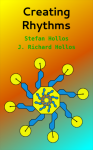

Creating Rhythms with Perl
 I recently finished the thin but dense book "Creating Rhythms". And being a programmer at heart, I naturally turned most of the math and c code into a handy perl module for any intrepid programmer to play with!
This book is full of musical descriptions of mathematical sequences that can be interpreted as a series of rhythmic onset and rest beats.
The descriptions of the math and algorithms are great, but the fact that the book has a companion website with mostly working (on my Macbook) c code is a blessing!
Now the actual program names are abbreviations of their functionality. Like cfcv() - that stands for "a continued fraction convergent." I mirrored these names in order to maintain a connection with the book. But for what it's worth, naming things is hard. And coming up with any better names was difficult at best!
I was pleased to find that porting the c algorithms as-is into perl was sufficiently (and sometimes very) fast. I thought about translating them to "idiomatic" perl, but was not sure how to implement the (often recursive) algorithms into said idioms. So I left them be for the most part. Some algorithms are straight-up perl modules with a single call. So I used that as much as I could (e.g. for de Bruijn and permutations, etc.).
For completeness, I also added methods to do things to the sequences and intervals described in the book. So you can invert or reverse a sequence at a cetain point, or you can convert intervals to sequences and back. Also, I figured out how to render Euclidean rhythms by studying Godfried Toussaint [PDF] and added that method too.
Music-Math nerds - Enjoy! :D